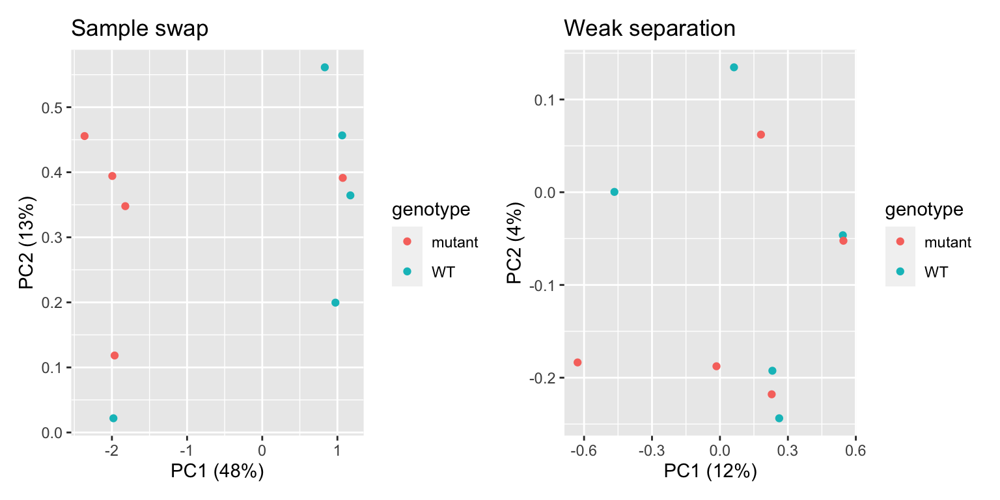

R
set.seed(1992)
library(DESeq2)
library(tidyverse)
library(ggrepel)The main goal of most RNA-seq experiments is to discover which genes are differentially expressed between different groups (treatments, tissues, genotypes): the list of differentially expressed genes (DEGs). After the previous section, we now have a big count table with the number of reads that map to each gene in each sample. How do we get to our goal from this table? We will need to use statistical models! In this section, we will use the DESeq2 package in R for differential gene expression analysis. Several other packages with different statistical models and assumptions exist (e.g. EdgeR and Limma), but DESeq2 is robust, widely-used, and user friendly.
In this tutorial, we will explore the transcriptomes of A. thaliana plants that experienced microgravity by growing on the International Space Station, while control plants were grown on earth. The experimental design is simple: there are three replicates in both conditions space_flight and ground_control.
First we will load the packages that we need, and then load the count table and metadata file.
R
set.seed(1992)
library(DESeq2)
library(tidyverse)
library(ggrepel)R
raw_counts <- read.csv("../data/GLDS38_raw_counts.csv", header = T, stringsAsFactors = F)
raw_counts <- raw_counts %>% column_to_rownames("gene")
metadata <- read.csv("../data/samples_to_condition.csv", header = T)
raw_counts[1:4,1:4]../ and you could use data/GLDS38_raw_counts.csv instead.
gene as row names instead of a dedicated column.
Atha_WT_Col_0_sl_FLT_Rep1_G1S1 Atha_WT_Col_0_sl_FLT_Rep2_G1S2
AT1G01010 339 383
AT1G01020 126 117
AT1G01030 153 158
AT1G01040 1238 442
Atha_WT_Col_0_sl_FLT_Rep3_G1S3 Atha_WT_Col_0_sl_GC_Rep1_G2S1
AT1G01010 363 650
AT1G01020 89 60
AT1G01030 143 97
AT1G01040 543 783That looks good! Now, it’s important to note that DESeq2 expects the sample names (columns in count table) to exactly match the sample names in the metadata file, and be in the same order! For this small dataset, we can inspect that by eye. In addition, and probably useful for larger datasets, we can use the all() function to check this.
R
head(metadata) sample_name condition
1 Atha_WT_Col_0_sl_FLT_Rep1_G1S1 space_flight
2 Atha_WT_Col_0_sl_FLT_Rep2_G1S2 space_flight
3 Atha_WT_Col_0_sl_FLT_Rep3_G1S3 space_flight
4 Atha_WT_Col_0_sl_GC_Rep1_G2S1 ground_control
5 Atha_WT_Col_0_sl_GC_Rep2_G2S2 ground_control
6 Atha_WT_Col_0_sl_GC_Rep3_G2S3 ground_controlR
all(colnames(raw_counts) == metadata$sample)TRUE, you need to reorder or rename sample names in one of your files.
[1] TRUETODO: purposely make out of order the metadata file! and use match() to reorder it?
dds objectWe are now ready to create a DESeqDataSet object, commonly abbreviated as dds. The dds object will contain our count tables and metadata, but later, also the normalized counts and differentially expressed gene lists. As such, the dds objects help us keep things neat in our RStudio session. To make one, we need to specify our experimental design ‘formula’. In this tutorial, there’s only one variable: the design formula will be as simple as ~ condition. However, in multi-factor experiments it can include additional variables, can also include unwanted sources of variation such as RNA isolation batch, the researcher who extracted RNA, or on which table the plants were grown. Including these factors in the design formula will help DESeq2 to account for these soures of variation, allowing more accurate estimation of the primary condition’s effect. For example, in an experiment with a potential batch effect, treatments, and different genotypes: ~ batch + treatment + genotype. If you also want to model the interaction, that is whether the treatment effect varies by genotype, change the + to a *: ~ batch + treatment * genotype.
R
dds <- DESeqDataSetFromMatrix(countData = raw_counts,
colData = metadata,
design = ~ condition)Warning in DESeqDataSet(se, design = design, ignoreRank): some variables in
design formula are characters, converting to factorsAs essential step in RNA-seq analysis is to inspect similarity between samples. In particular, we should confirm that replicates with the same treatment are similar to each other, and make sure that the experimental condition is the major source of variation in the data. In addition, these quality-control explorations will also help identify if any samples behalve as outliers, or whether there may have been a sample swap. We will use Principal Component Analysis (PCA) to do this. PCA is a dimensionality reduction technique that transforms complex high-dimensional data (like expression of thousands of genes) into a limited number of new variables (‘principal components’) that capture the most variation in the dataset.
Before performing the PCA itself, we need to take an import feature of RNA-seq data into account: the variance of a gene is strongly correlated to the expression level of the gene. In statistics language, our data is not homoscedastic, while PCA assumed homoscedastic data. We can solve this by performing a variance stabilizing transformation vst():
R
variance_stabilized_dataset <- vst(dds, blind = TRUE)Let’s inspect the average expression and standard deviation of each gene to show that this transformation worked. In the following plots, each dot represents one A. thaliana gene:
R
library(patchwork)
without_vst <- raw_counts %>%
as.data.frame() %>%
rownames_to_column("gene") %>%
pivot_longer(cols = - gene, names_to = "sample", values_to = "count") %>%
group_by(gene) %>%
summarise(gene_mean = mean(count), gene_sd = sd(count)) %>%
ungroup() %>%
ggplot(aes(x = log10(gene_mean), y = log10(gene_sd))) +
geom_point(alpha = 0.2) +
labs(x = "Gene count average\n(log10 scale)",
y = "Gene count standard deviation\n(log10 scale)") +
ggtitle("No variance stabilization")
variance_stabilised_counts <- assay(variance_stabilized_dataset)
with_vst <- variance_stabilised_counts %>%
as.data.frame() %>%
rownames_to_column("gene") %>%
pivot_longer(cols = - gene, names_to = "sample", values_to = "count") %>%
group_by(gene) %>%
summarise(gene_mean = mean(count), gene_sd = sd(count)) %>%
ungroup() %>%
ggplot(aes(x = log10(gene_mean), y = log10(gene_sd))) +
geom_point(alpha = 0.2) +
labs(x = "Gene count average\n(log10 scale)",
y = "Gene count standard deviation\n(log10 scale)") +
ggtitle("Variance stabilized")
without_vst | with_vstIndeed, we can observe that genes that are highly expressed (have high mean count) also have a high standard deviation. This correlation is no longer there after stabilizing the variance.
Okay, finally we are ready to make our PCA. DESeq2 makes this very easy for us with a simple function:
R
plotPCA(variance_stabilized_dataset)using ntop=500 top features by varianceLet’s break this plot down:
PC1) explains 60% of the variance, while PC2 explains 29%. Those are nice scores. However, PC1 does not seem to separate our two conditions. This means that there’s another source of variation in this dataset that we are seemingly unaware of.PC2 nicely separates our two conditions. This is good!space_flight cluster very closely together, while one sample is quite a distant from those two. This means that this one replicate behaves a bit differently than the rest. However, since it’s still similar to the other two samples on the PC2 axis, this does not worry me.While it is impossible to give examples of all situations that can occur in PCAs, we highlight a few below in fake PCA plots:
R
df_swap <- data.frame(
PC1 = c(rnorm(5, mean = 1, sd = 0.2),
rnorm(5, mean = -2, sd = 0.2)),
PC2 = c(rnorm(5, mean = 0.4, sd = 0.2),
rnorm(5, mean = 0.3, sd = 0.2)),
genotype = c(rep("WT", 4), "mutant", rep("mutant", 4), "WT"))
df_weak_sep <- data.frame(
PC1 = c(rnorm(5, mean = 0.2, sd = 0.45),
rnorm(5, mean = 0, sd = 0.6)),
PC2 = c(rnorm(5, mean = 0, sd = 0.25),
rnorm(5, mean = 0, sd = 0.25)),
genotype = rep(c("WT", "mutant"), each = 5)
)
p1 <- df_swap %>% ggplot(aes(x = PC1, y = PC2, colour = genotype)) + geom_point() +
xlab("PC1 (48%)") +
ylab("PC2 (13%)") +
ggtitle("Sample swap")
p2 <- df_weak_sep %>% ggplot(aes(x = PC1, y = PC2, colour = genotype)) + geom_point() +
xlab("PC1 (12%)") +
ylab("PC2 (4%)") +
ggtitle("Weak separation")
p1 | p2
In the first plot, we see one WT sample clustering with mutant samples, and vice versa. This is a clear indication that two samples were swapped somewhere in the process: during sampling, RNA extraction, cDNA synthesis, library prep, or in the metadata file. If you can trace this back in your labjournal, you could swap the sample label back. If not… it’s probably better to discard these two samples completely. In the second plot, we can see that there’s no clear separation between WT and mutant samples. In addition, the two PCs explain little of the variance present in the dataset. This is an indication that the genotype actually has little impact on the transcriptome. While worrying, this does not mean that all is lost! You can still proceed to differential expression analysis, maybe the difference between the two genotypes is quite subtle.
R
df_confounding_1 <- data.frame(
PC1 = c(rnorm(5, mean = 1, sd = 0.45),
rnorm(5, mean = -1, sd = 0.6)),
PC2 = c(rnorm(5, mean = 0, sd = 0.25),
rnorm(5, mean = 0, sd = 0.25)),
genotype = rep(c("WT", "mutant"), each = 5),
gender = rep(c("male", "female"), each = 5)
)
p1 <- df_confounding_1 %>% ggplot(aes(x = PC1, y = PC2, colour = genotype)) + geom_point() +
xlab("PC1 (48%)") +
ylab("PC2 (13%)") +
ggtitle("Genotype effect ...")
p2 <- df_confounding_1 %>% ggplot(aes(x = PC1, y = PC2, colour = gender)) + geom_point() +
xlab("PC1 (48%)") +
ylab("PC2 (13%)") +
ggtitle("... or gender effect?")
p1 | p2
In this example, we see separation of our wildtype and mutant samples. Experiment succesful! … or is it? Upon closer inpection, we can see that gender of our samples also separates our samples in the same way. It turns out that all wildtypes were male mice, and all mutants were female. We will therefore never know if differentially expressed genes are caused by the genotype, or simply by the gender of the mice: a clear case of confounding variable. This is an experimental design flaw, and should have been caught before sampling. Yet, it happens!
DESeq2 handles all steps of DEG analysis, from sample normalization to the statistical models and tests in one function. Easy! We run this function with the dds object as input, while storing the output in the dds object as well. In this way, we will ‘fill’ the dds object with the new analysis. R will now print all the individual steps that the DESeq() function performed for us.
R
dds <- DESeq(dds)estimating size factorsestimating dispersionsgene-wise dispersion estimatesmean-dispersion relationshipfinal dispersion estimatesfitting model and testingTODO: show plot of normalization effect
Now, to extract the list of DEGs from the dds we run another line of code. The argument alpha is used to specify the p-value cutoff for significance, the default value is alpha = 0.1. We will use 0.05 here. We will also sort the table on p-value:
R
res <- results(dds, alpha = 0.05)
DEGs <- res %>%
as.data.frame() %>%
rownames_to_column("genes") %>%
mutate(minus_log10_pvalue = -log10(padj)) %>%
arrange(padj)
head(DEGs)
write.csv(DEGs, 'DEGs_spaceflight_vs_ground.csv', quote = FALSE, row.names = FALSE)genes column from the rownames, make a new column with -log10 transformed p-values, then sort by adjusted p-value.
genes baseMean log2FoldChange lfcSE stat pvalue
1 AT5G04120 456.5672 3.626601 0.2462679 14.72625 4.373302e-49
2 AT2G28780 1964.3983 -3.630964 0.3295515 -11.01790 3.132877e-28
3 AT1G62280 217.8345 -3.901515 0.3558773 -10.96309 5.750122e-28
4 AT1G32450 5241.0272 -3.468312 0.3201047 -10.83493 2.351468e-27
5 AT1G30530 708.2953 2.033682 0.1938998 10.48832 9.775358e-26
6 AT1G15380 739.4577 -2.714855 0.2601613 -10.43528 1.711141e-25
padj minus_log10_pvalue
1 9.870980e-45 44.00564
2 3.535609e-24 23.45154
3 4.326200e-24 23.36389
4 1.326874e-23 22.87717
5 4.412792e-22 21.35529
6 6.437029e-22 21.19131todo:
One way to visualize DEG results is to display them in a Volcano plot. Such a plot shows a measure of effect size (log2 fold changes) versus a measure of significance. There are tools available (developed by Joachim Goedhart, assistant professor at SILS) to help you make such a plot using the DEG list we just saved as a .csv file. Alternatively, we can make one ourselves for full control of the plot:
R
# Define fold change and p-value cutoffs
lfc_cutoff <- 1.5
padj_cutoff <- 0.05
# Make new categorical variable containing significance information
DEGs <- DEGs %>%
mutate(significance = case_when(
padj < padj_cutoff & log2FoldChange > lfc_cutoff ~ 'Significantly upregulated',
padj < padj_cutoff & log2FoldChange < -lfc_cutoff ~ 'Significantly downregulated',
padj < padj_cutoff ~ 'Significant but small effect size',
TRUE ~ 'Not significant'
))
colors <- c("Significantly upregulated"="#E69F00", "Significantly downregulated"="#56B4E9", "Not significant"="gray80", "Significant but small effect size" = 'grey50')
# select top 10 genes to highlight
top_genes <- DEGs[1:10, ]
volcano <- DEGs %>%
ggplot(aes(x = log2FoldChange, y = -log10(padj), colour = significance)) +
geom_point(alpha = 0.5, size = 0.8) +
geom_hline(aes(yintercept = -log10(padj_cutoff)), linetype = "dashed") +
geom_vline(aes(xintercept = lfc_cutoff), linetype = "dashed") +
geom_vline(aes(xintercept = -lfc_cutoff), linetype = "dashed") +
geom_point(data = top_genes, shape = 21,fill = NA, color = "black") + # Highlight top10
geom_text_repel(data = top_genes, aes(label = genes), size = 2, min.segment.length = 0) +
scale_color_manual(values=colors) +
xlim(c(-10,10)) +
theme_bw()
ggsave("volcano_plot.png", volcano, width = 14, height = 8, units = "cm")Warning: Removed 10262 rows containing missing values or values outside the scale range
(`geom_point()`).volcano Warning: Removed 10262 rows containing missing values or values outside the scale range
(`geom_point()`).